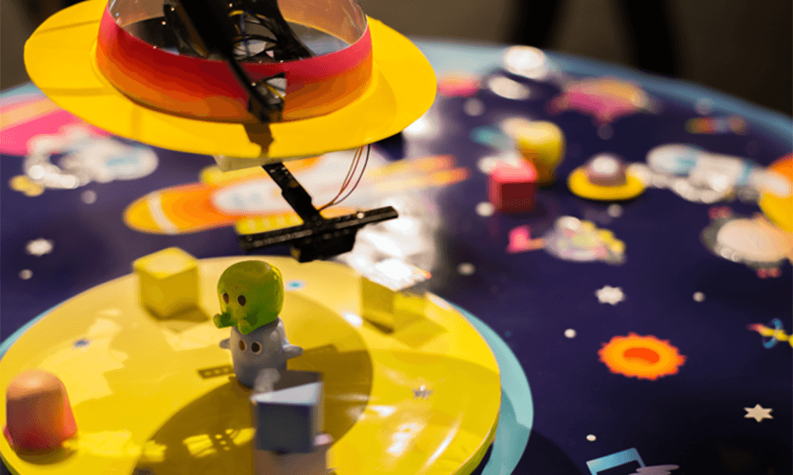

WORKS

宇宙音楽祭
groupwork,arduino,Processing宇宙音楽祭はarduinoやtouchboardを用いて音楽を奏でる電子作品です。
物体の距離を測定し、距離に応じて異なる音色を奏でます。
webサイトはこちら
- 担当
- 企画、実装
- URL
- http://chocomelo.jp/

銀色部分は静電式のタッチセンサーが埋め込まれており、タッチすることで
音を鳴らすことができます。
ちょこめろちょこめろちょこめろちょこめろちょこめろちょこめろちょこめろちょこめろ